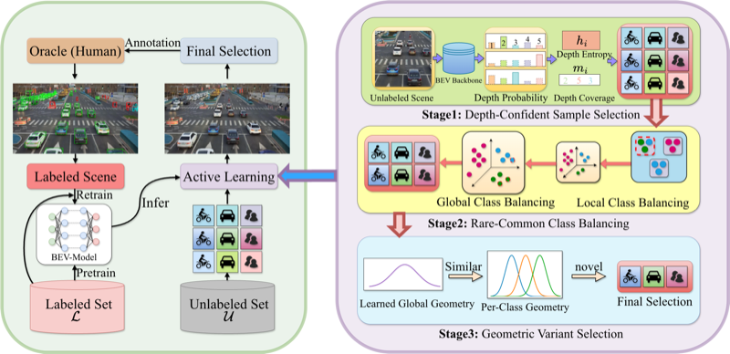
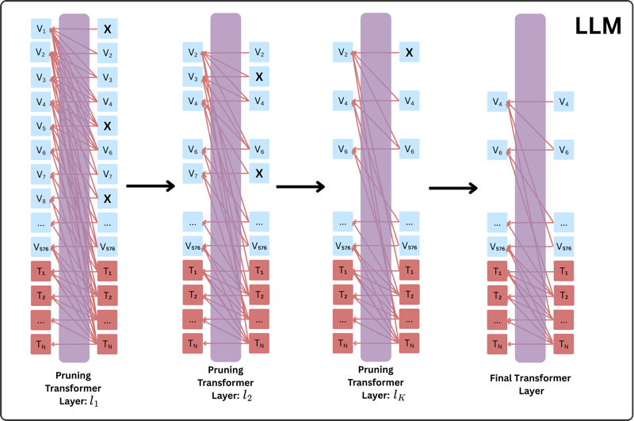
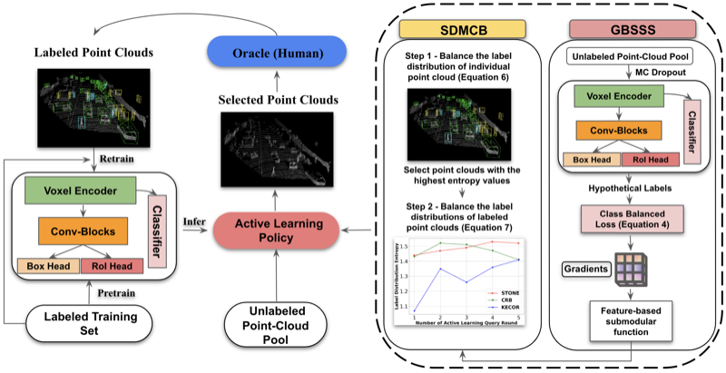
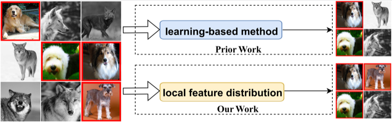
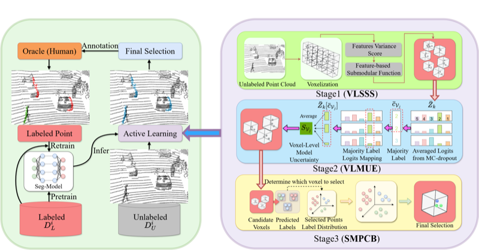

Ph.D. Student in Computer Science
The University of Texas at Dallas
I am a Ph.D. student in Computer Science at the University of Texas at Dallas (expected May 2027), advised by Prof. Yunhui Guo. My research focuses on Computer Vision & Data-Efficient Learning and Efficient LLMs & Multimodal Large Language Models. Specifically, I work on active learning, submodular optimization, data selection, 3D object detection, BEV perception, LiDAR perception, vision-language models, and multimodal DPO.
Richardson, TX, USA
Active learning, submodular optimization, data selection, open-set learning, 3D object detection, BEV perception, LiDAR perception, LiDAR semantic segmentation, autonomous driving.
Vision-language models, multimodal learning, vision token reduction, attention-driven self-compression, efficient training, efficient inference, learnability-aware training, active data selection, multimodal DPO.
Learnability-Driven Submodular Optimization for Active Roadside BEV Perception
Proposed LH3D, a learnability-driven submodular framework for roadside monocular 3D detection that explicitly modeled ambiguous roadside-only scenes and selected camera views that were both highly informative and reliably labelable on DAIR-V2X-I.

Designed an attention-driven self-compression mechanism that leveraged the LVLM's own attention patterns to aggregate dense vision tokens into a compact set of summary tokens, removing redundant vision tokens while preserving accuracy.

STONE: A Submodular Optimization Framework for Active 3D Object Detection
Proposed STONE, the first submodular optimization framework for active 3D object detection, with a two-stage algorithm achieving strong label efficiency on KITTI and Waymo.

Inconsistency-Based Data-Centric Active Open-Set Annotation
Introduced NEAT, a data-centric active open-set annotation method that used CLIP features and label clusterability to detect known-class samples, and an inconsistency score to select informative queries while avoiding unknown classes.

SELECT: A Submodular Approach for Active LiDAR Semantic Segmentation
Developed SELECT, a voxel-centric submodular pipeline for LiDAR semantic segmentation on SemanticPOSS, SemanticKITTI, and nuScenes under limited annotation budgets.

Learnability-Aware Active Multimodal Direct Preference Optimization
Developed an active multimodal DPO framework that used learnability-aware scoring to select informative image–text preference pairs, improving multimodal alignment while reducing preference data and training cost.
Ph.D. in Computer Science · GPA: 3.62/4.00
Jan. 2024 – May 2027 (Expected)
M.S. in Computer Science · GPA: 3.62/4.00
Aug. 2021 – Dec. 2023
B.S. in Aerospace Engineering
Aug. 2017 – May 2021
Reviewer: CVPR, AAAI, NeurIPS, TMLR